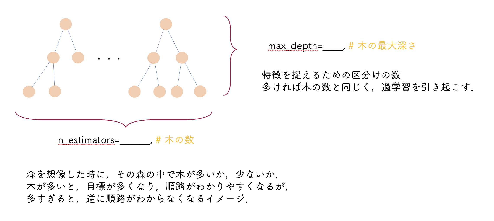

機械学習
自身の研究を行う過程で，ある論文をきっかけに学部生3回生の時，機械学習に興味を持ち，様々な予測について学び，kaggleやsignateといったサイトを利用するなどして，自己学習に励みました．
ある論文に関して，国立研究開発法人である日本のNIMSが発表した機械学習により発見した磁気冷凍材料に関する2022年に発行されたものです．もともとMI(materials informatics)に興味があったので，この論文はとても興味深いものでした．
下記に，機械学習について学んだことの一例を下記に記しました．これはあるお店の売上を予測を考える時に作成したコードです．
import pandas as pd
(中略)...
df = pd.read_csv('data.csv')
X = df[['売上数の週平均',......, '降水量', '時間別通行量']]
y = df['売上']
...
# モデルの設定
xg_reg = xgb.XGBRegressor(
n_estimators=30,
max_depth=5,
...
objective=(他で定義した損失関数)
)
...
# 訓練
xg_reg.fit(X_train, y_train)
# 予測
preds = xg_reg.predict(X_test)
...
rmse = np.sqrt(mean_squared_error(y_test, preds))
...
・データ収集,データクリーニング
・ハイパーパラメータ調整
・様々な損失関数の適用
上記3点等を行いました．機械学習をしていて感じたことは，データ収集が一番大変でした．特に日本においては，国民性によるものか，データが収集のしにくさが目立ちました．企業においても，情報を公開するということは競合他社等に利用されるリスクが顕在するので，なかなかオープンデータは集まりにくいのかなとも感じました．また，損失関数だけでもたくさんあり，どれがこのモデルに適正な関数か．このこと考えるのには経験が必要だと痛感しました．ただ，適切な関数や，パラメータを見つけて，精度を上げられた時は嬉しいです．
今後はさらに大きいデータサイズのものを扱い，機械学習をしていきたいと考えています．
しかしながら，周りに大きいデータセットはなかなか存在しないので，大きいデータセット触れられ，様々な専門の機械学習の事例に関して学べるkaggleなどのサイトを利用していきたいです．
↑ハイパーパラメータの一部について．
↑ハイパーパラメータについては，最初は手動で1つずつ値をずらしていましたが，それさえも自動で適切なパラメータを計算してくれるものがすでにあるそうなので，そういったツールも使っていきたいと考えています．
＿＿＿＿＿＿＿＿＿＿＿＿＿＿＿＿＿＿＿＿＿＿＿＿
τ-損失関数の適応
τ-損失関数はデータセットの一部に優先をしたい時にしばしば適応されます．
使用しているデータのEDAを行う際に，売れ行きが少ない時にはばらつきがあるのですが，多い時は相関が明確になっていました．このことから，上位のデータに重みを置いた内容のτ-損失関数を使用しました．